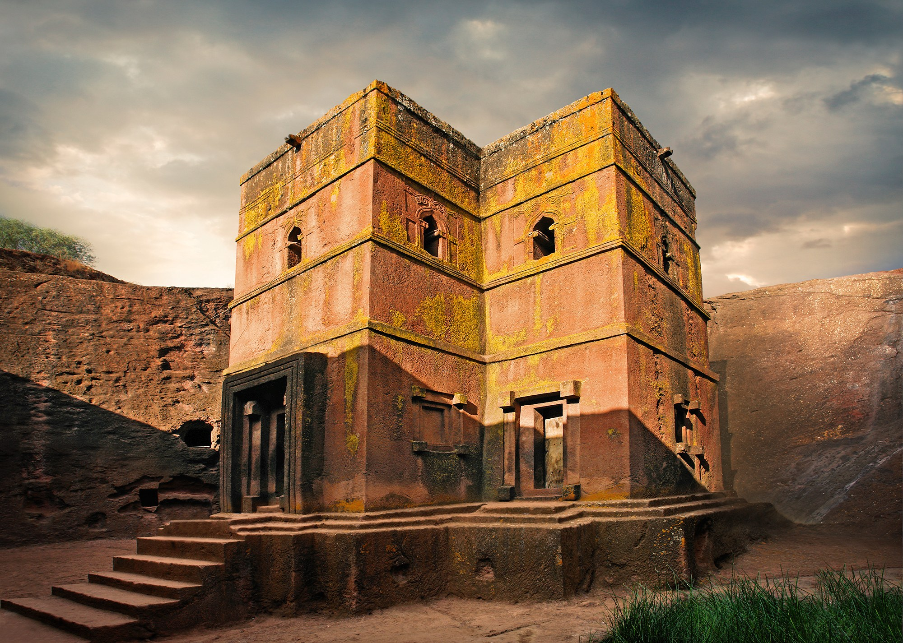
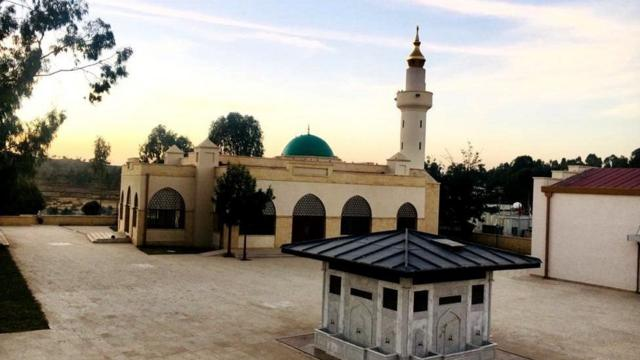
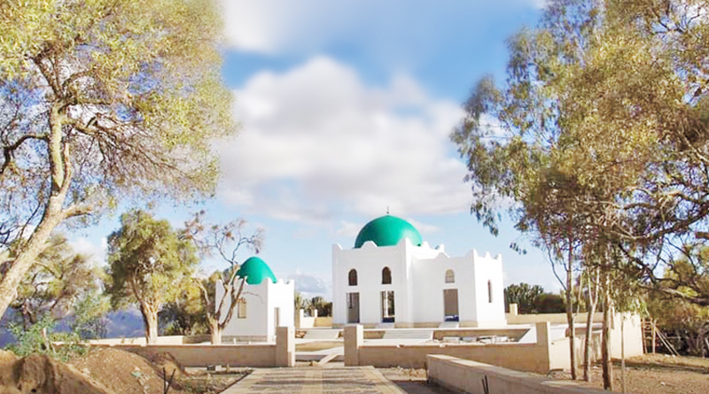

LALIBELA

The Lalibela Church refers to a group of 11 rock-hewn
churches located in the town of Lalibela in northern Ethiopia.
These churches were carved out of solid rock in the 12th century
under the direction of King Lalibela, who wanted to create a "New
Jerusalem" in Ethiopia. The churches are considered remarkable
architectural and engineering achievements, with intricate carvings,
underground passageways, and unique features such as windows, doors,
and columns all chiseled out of the rock. The Lalibela Church complex
is a UNESCO World Heritage Site and an important pilgrimage site for
Ethiopian Orthodox Christians. It is one of the most iconic and significant
religious sites in Ethiopia and attracts visitors from around the world.
Round Trip: 100$
NEJASHI
 
Nejashi is a historic town located in northern Ethiopia.
It is known for its significance in Islamic history, particularly
for the story of the first hijra (migration) of Muslims to Abyssinia (Ethiopia)
to escape persecution in Mecca. The ruler of Nejashi, known as Ashama ibn Abjar,
offered protection to the Muslim refugees, which is considered a significant
event in the early history of Islam.
In addition to its historical significance in Islamic history, Nejashi is also
known for its ancient ruins and archaeological sites. The town has remnants of
ancient civilizations, including structures like old mosques, tombs, and other
historical buildings. Nejashi is a popular destination for tourists and history
enthusiasts who are interested in exploring the rich cultural heritage of
Ethiopia.
The town is located in the Tigray region of Ethiopia, surrounded by beautiful
landscapes and natural attractions. Visitors to Nejashi can also explore the
nearby mountains, valleys, and traditional villages, offering a unique glimpse
into the local way of life.
Overall, Nejashi is a fascinating destination with a rich history, cultural
significance, and natural beauty, making it a must-visit for travelers interested
in exploring the diverse heritage of Ethiopia.
Round Trip: 100$
TANA ISLAND CHURCHES

Tana Island, also known as Dek Island, is located in Lake Tana,
the largest lake in Ethiopia and the source of the Blue Nile River.
The island is home to several historic churches and monasteries that
are significant in Ethiopian Orthodox Christian history and culture.
Visiting Tana Island and exploring its historic churches and monasteries
provides a unique opportunity to learn about the rich religious and cultural
heritage of Ethiopia. The island's tranquil setting and picturesque surroundings
make it a peaceful and spiritual destination for travelers seeking a deeper understanding
of Ethiopian Orthodox Christianity.
Round Trip: 100$